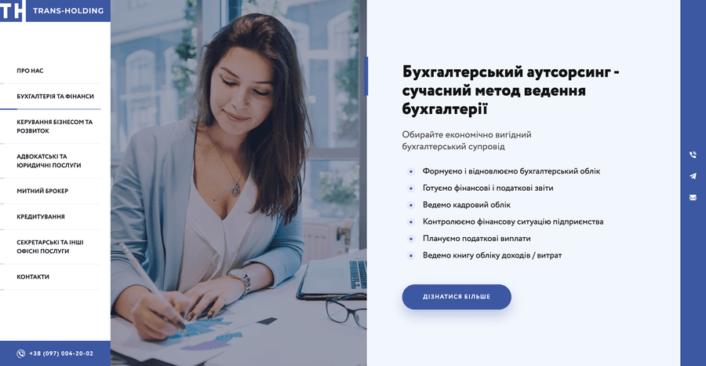

Сьогодні перед власниками бізнесу стоять завдання ефективно розвиватися, вигідно реалізовувати продукцію та послуги, скорочувати витрати. Без власного сайту, який привертає увагу відвідувачів, це зробити дуже непросто.
Як показує досвід, далеко не кожному бізнесу потрібний складний багатосторінковий сайт із великою кількістю функцій. Багатьом достатньо декількох сторінок, щоб ознайомити потенційних клієнтів зі своєю компанією та поділитися контактами. Більшості клієнтів цього також цілком вистачає. Особливо тим, хто не хоче витрачати багато часу на пошук необхідної інформації.
Є чудове рішення – персональний сайт-візитка! Це невеликий веб-ресурс із лаконічним дизайном. Віртуальна візитка є зручним способом розповісти про себе, розмістити інформацію про організацію або продукт.
Розглядаючи приклади хороших сайтів, слід зазначити, що вони підвищують довіру клієнтів до компанії, викликають позитивні емоції, націлюють на подальшу співпрацю.
Саме за таким принципом працюють сайти-візитки: швидкі, доступні, інформативні. Такі сайти коротко та ємко надають відвідувачам основні відомості про вашу фірму.
Виділяють декілька видів сайтів-візиток
- Персональна сторінка-візитка: призначена для людей, які бажають налагодити зв’язки з громадськістю, однодумцями та друзями. Часто використовується як платформа для ведення особистого блогу, фотографій, відео та іншого контенту.
- Комерційний сайт-візитка для бізнесу: структурує інформацію про компанію, забезпечує зв’язок з партнерами та клієнтами, дозволяє рекламувати та просувати послуги в Інтернеті.
- Сайт-візитка портфоліо: чудово підходить для індивідуальних підприємців, творчих осіб та людей, які займаються наданням послуг – приватних адвокатів, лікарів, фотографів, дизайнерів, майстрів б’юті-сфери, фрілансерів, копірайтерів тощо. Завдяки сайту-візитці, вони можуть шукати замовників, демонструвати свої роботи онлайн, розповідати про переваги та ціни, отримувати зворотний зв’язок.
Хороші відгуки про сайти-візитки можна почути від невеликих компаній, які нещодавно розпочали свою діяльність. Які поки що не мають необхідності у повноцінному корпоративному сайті, а також фінансової можливості для великих вкладень.
Розглянемо декілька вдалих прикладів оформлення сайтів-візиток компаній.
Приклад №1: Сайт-візитка клініки
Грамотне донесення інформації робить веб-сайт медичної клініки «Варта» відмінним зразком сайту-візитки. Ви можете швидко зрозуміти, які послуги та за якими цінами пропонуються, записатися на прийом та ознайомитися з акціями.
Приваблює розширений опис послуг та вживаних методів, а також способи підготовки до процедур. Слайдер допомагає ефектно показати зображення на головній сторінці. Колірна схема відповідає всім вимогам щодо оформлення сайтів медичних установ – білий фон, відсутність агресивних кольорів.
Приклад №2: Сайт-візитка салону краси
Аналізуючи красиві сайти, як приклади для наслідування, варто звернути увагу на сайт салону краси «New Style», який приваблює стильним продуманим дизайном. У його оформленні використано не більше трьох базових кольорів. Сайт відрізняється простою навігацією та зручним розміщенням у верхній частині сторінки потрібних елементів: адреси, номери телефонів, блогу, посилань на соцмережі та месенджери.
Випливаючі бічні зображення з послугами салону продубльовані у верхній лівій частині сторінки поряд із розділом «Товари», в якому представлений асортимент косметики.
Для статей у блозі та описі послуг обраний шрифт, що легко читається; ненав’язливо привертає увагу кнопка онлайн-запису.
Приклад №3: Сайт транспортної компанії
Топ сайтів-візиток, орієнтованих на перевезення вантажів, поза сумнівом, займає «М3 Cargo». Сайт яскравий та барвистий, з якісними зображеннями, картою шляху товарів та масою корисних статей у блозі.
Всі пункти меню добре структуровані та представлені в логічній послідовності. Можна без зусиль знайти інформацію з будь-якого питання.
На сайті не надто багато тексту, зате є декілька інформативних відеороликів та презентація. Оригінально продуманий розділ із успішно виконаними замовленнями та історіями задоволених клієнтів. Графічні елементи та заклики до дії виділяються за кольором та формою на основному фоні. Від перегляду сайту у прямому розумінні піднімається настрій!
Приклад №4: Сайт-візитка будівельної компанії
«Будова» – один із прекрасних прикладів правильно зробленого бізнес-сайту. Рід діяльності компанії зрозумілий з першого погляду, сайт має індивідуальність і однозначно відрізняється від конкурентів.
У розділах знаходиться великий обсяг інформації, але сайт не виглядає перевантаженим. При наведенні курсору на зображення об’єкта з’являється коротке повідомлення з основною інформацією про кожен будівельний комплекс.
Є можливість згрупувати квартири за різними параметрами. На сайті реалізований слайдер з відгуками щасливих мешканців, є візуалізація пропонованих об’єктів. Є ненав’язливий банер верхнього рівня з вигідними пропозиціями та діючими акціями.
Приклад №5: Сайт консалтингової фірми
Дизайн фінансового бізнес-сайту «Trans Holding» елегантний, зручний для мобільних пристроїв, пропонує чіткі та зрозумілі послуги.
Головне меню сайту закріплено зліва, що дає можливість відвідувачам легко зорієнтуватися у структурі сайту; на тоненькій смузі праворуч знаходяться кнопки пошти та месенджерів.
Вивчаючи приклади сайтів-візиток, відразу помічаєш вдалі ідеї: тут розділи мають достатню кількість вільного простору та плавне прокручування, завдяки чому контент легко читається. До кожного блоку додано структурований перелік переваг, підібрані відповідні зображення.
Люди позбавлені читання текстових «простирадл», на сайті розміщена лише найважливіша та актуальніша інформація. Клієнтам пропонується приємний бонус – безкоштовний експрес-аудит бізнесу!
Приклад №6: Сайт-візитка агентства нерухомості
Головна сторінка сайту-візитки агентства нерухомості «Dinas» знайомить відвідувачів з послугами компанії та спецпропозиціями. Про кожну квартиру (при натисканні зображення) з’являються докладні відомості та контакти співробітника.
У розділі «Довідка» знаходиться нормативно-правова інформація, яка може стати в нагоді потенційним клієнтам агентства: час роботи нотаріальних контор, кадастрових відділів, розрахунково-довідкових центрів тощо.
При виборі ріелтора потенційному клієнту важливі його репутація та досвід. Про це можна дізнатися у секції «Співробітники», де є реальні фото кожного фахівця, коротка інформація про нього, дипломи та сертифікати. Це явний плюс у скарбничку довіри відвідувачів.
Приклад №7: Сайт мовної школи

Найкращі приклади сайтів-візиток, що складаються з однієї сторінки, відкриває сайт школи англійської мови «R english». Сайт не засипає користувачів великою кількістю контенту, зате використовує цікаві ефекти під час прокручування.
Сторінка утримує увагу відвідувача, розпалює його інтерес та показує вигоди. Сайт містить заклики до дії та підштовхує людину до потрібного рішення. Усі вимоги, яким має відповідати сайт-візитка, дотримані.
Бонусом є безкоштовний тест для визначення рівня англійської. Блоки містять коротку, але цінну інформацію, розсіюють страхи потенційного студента та відповідають на його запитання.
Приклад №8: Сайт юридичної фірми
Сайт-візитка юридичної компанії «ОМЕГА Груп» використовує мінімальну колірну гаму та одразу налаштовує відвідувачів на діловий лад. Простежується принцип конуса – інформація структурована згори донизу за рівнем важливості.
Сайт допомагає вирішити безліч проблем клієнта, надає цілодобовий зв’язок по гарячій лінії, а також дає можливість поставити питання фахівцеві прямо на сайті. Юридична онлайн-візитка демонструє стриманість та лаконічність. Звертаючись до тривог клієнта, мотивує виконати цільову дію (залишити заявку, замовити дзвінок).
Є зручна функція – попередній розрахунок вартості послуг. Є можливість отримати безкоштовну консультацію юриста у месенджері або за телефоном. У розділі «Виконані роботи» можна ознайомитися з портфоліо, прочитати про подробиці справ та рішення суду.
Приклад №9: Сайт медичного центру
Дивлячись на медичний навігатор “MEDICAL LOGISTIC”, розумієш, що це дуже вдалий приклад із ряду лікарських сайтів-візиток. Спливаюче вікно з пропозицією безкоштовної консультації повідомляє пацієнта про бажання допомогти йому у будь-якому випадку.
Дизайнер сайту вибрав відповідну колірну схему, тип шрифту, фотографії, а також логічно розташував текстові блоки. Відвідувачі сайту можуть ознайомитися з прайсом та заповнити форму для повного розрахунку вартості лікування. Пропонуються дистанційні послуги для тих, хто не може приїхати до Ізраїлю.
На сайті дуже багато інформації, але вона необхідна: це повний опис клінік та послуг, аналізів та методів діагностики, відомості про лікарів та їх досвід.
Приклад №10: Сайт-візитка фотографа

Унікальний сайт-візитка професійного фотографа Олени Перепелиці заслуговує на захоплення. Відразу виникає бажання записатися на фотосесію! Все це завдяки незвичайному дизайну, інтуїтивно зрозумілому меню та яскравим фотографіям. Блоки містять короткий опис фотозйомок та приклади фото.
Можна оформити фотосесію в подарунок, а також підрахувати витрати за допомогою онлайн-калькулятора, додавши всі необхідні опції.
Виразні, ефектні зображення створюють настрій і спонукають залишатися на сайті якнайдовше, розглядаючи портфоліо. Цей сайт-візитка є прикладом оригінального дизайну, де невелика кількість приклади сайтів візитоктексту врівноважується чудовим візуальним контентом.
Якщо у вас немає потреби створювати великий багатосторінковий сайт, почніть саме з сайту-візитки. Не готові повністю зануритися в його створення, але хочете отримати якісний ресурс?
Спеціалісти digital-агенції «Atriples» готові допомогти вам! Ми створимо сучасний сайт, який повністю відповідатиме потребам вашого бізнесу і принесе результат.